건축기사 (2021-09-12 기출문제)
1과목: 건축계획
1. 상점 건축의 진열장 배치에 관한 설명으로 옳은 것은?
- 손님 쪽에서 상품이 효과적으로 보이도록 계획한다.
- 들어오는 손님과 종업원의 시선이 정면으로 마주치도록 계획한다.
- 도난을 방지하기 위하여 손님에게 감시한다는 인상을 주도록 계획한다.
- 동선이 원활하여 다수의 손님을 수용하고 가능한 다수의 종업원으로 관리하게 한다.
(정답률: 86%)

2. 다음 중 도서관에 있어 모듈 계획(Module Plan)을 고려한 서고 계획 시 결정 및 선행되어야 할 요소와가장 거리가 먼 것은?
- 엘리베이터의 위치
- 서가 선반의 배열 깊이
- 서고 내의 주요 통로 및 교차 통로의 폭
- 기둥의 크기와 방향에 따른 서가의 규모 및 배열의 길이
(정답률: 82%)
3. 호텔의 퍼블릭 스페이스(public space) 계획에 관한 설명으로 옳지 않은 것은?
- 로비는 개방성과 다른 공간과의 연계성이 중요하다.
- 프론트 데스크 후방에 프론트 오피스를 연속 시킨다.
- 주식당은 외래객이 편리하게 이용할 수 있도록 출입구를 별도로 설치한다.
- 프론트 오피스는 기계화된 설비보다는 많은 사람을 고용함으로서 고객의 편의와 능률을 높여야 한다.
(정답률: 84%)
4. 아파트에서 친교공간 형성을 위한 계획 방법으로 옳지 않은 것은?
- 아파트에서의 통행을 공동 출입구로 집중시킨다.
- 별도의 계단실과 입구 주위에 집합단위를 만든다.
- 큰 건물로 설계하고, 작은 단지는 통합하여 큰 단지로 만든다.
- 공동으로 이용되는 서비스 시설을 현관에서 인접하여 통행의 주된 흐름에 약간 벗어난 곳에 위치시킨다.
(정답률: 64%)
5. 다음과 같은 특징을 갖는 건축양식은?
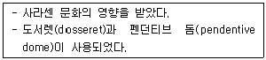
- 로마 건축
- 이집트 건축
- 비잔틴 건축
- 로마네스크 건축
(정답률: 79%)
6. 오토 바그너(Otto Wagner)가 주장한 근대건축의 설계지침 내용으로 옳지 않은 것은?
- 경제적인 구조
- 그리스 건축양식의 복원
- 시공재료의 적당한 선택
- 목적을 정확히 파악하고 완전히 충족시킬 것
(정답률: 85%)
7. 공동주택의 단면형식에 관한 설명으로 옳지 않은 것은?
- 트리플렉스형은 듀플렉스형보다 공용면적이 크게 된다.
- 메조넷형에서 통로가 없는 층은 채광 및 통풍 확보가 양호하다.
- 플랫형은 평면구성이 제약이 적으며, 소규모의 평면계획도 가능하다.
- 스킵 플로어형은 동일한 주거동에서 각기 다른 모양의 세대 배치가 가능하다.
(정답률: 70%)
8. 공연장의 객석 계획에서 잘 보이는 동시에 실제적으로 관객을 수용해야 하는 공연장에서 큰 무리가 없는 거리인 제1차 허용거리의 한도는?
- 15m
- 22m
- 38m
- 52m
(정답률: 73%)
9. 우리나라의 현존하는 목조건축물 중 가장 오래된 것은?
- 부석사 무량수전
- 부석사 조사당
- 봉정사 극락전
- 수덕사 대웅전
(정답률: 77%)
10. 열람자가 서가에서 책을 자유롭게 선택하나 관원의 검열을 받고 열람하는 도서관 출납 시스템은?
- 폐가식
- 반개가식
- 안전개가식
- 자유개가식
(정답률: 73%)
11. 테라스 하우스에 관한 설명으로 옳지 않은 것은?
- 각 호마다 전용의 뜰(정원)을 갖는다.
- 각 세대의 깊이는 7.5m 이상으로 하여야 한다.
- 진입방식에 따라 하향식과 상향식으로 나눌 수 있다.
- 시각적인 인공테라스형은 위층으로 갈수록 건물의 내부면적이 작아지는 형태이다.
(정답률: 77%)
12. 학교 교사의 배치 형식에 관한 설명으로 옳지 않은 것은?
- 분산병렬형은 넓은 부지를 필요로 한다.
- 폐쇄형은 일조, 통풍 등 환경조건이 불균등하다.
- 집합형은 이동 동선이 길어지고 물리적 환경이 나쁘다.
- 분산병렬형은 구조계획이 간단하고 생활 환경이 좋아진다.
(정답률: 81%)
13. 사무소 건물의 엘리베이터 배치 시 고려사항으로 옳지 않은 것은?
- 교통동선의 중심에 설치하여 보행거리가 짧도록 배치한다.
- 대면배치에서 대면거리는 동일 군 관리의 경우 3.5~4.5m로 한다.
- 여러 대의 엘리베이터를 설치하는 경우, 그룹별 배치와 군 관리 운전방식으로 한다.
- 일렬 배치는 6대를 한도로 하고, 엘리베이터 중심 간 거리는 10m 이하가 되도록 한다.
(정답률: 82%)
14. 사무소 건축의 코어 형식 중 편심형 코어에 관한 설명으로 옳지 않은 것은?
- 고층인 경우 구조상 불리할 수 있다.
- 각 층 바닥면적이 소규모인 경우에 사용된다.
- 바닥면적이 커지면 코어 이외에 피난시설 등이 필요해 진다.
- 내진구조상 유리하며 구조코어로서 가장 바람직한 형식이다.
(정답률: 83%)
15. 공장건축의 레이아웃에 관한 설명으로 옳지 않은 것은?
- 장래 공장 규모의 변화에 대응한 융통성이 있어야 한다.
- 제품중심의 레이아웃은 생산에 필요한 모든 공정, 기계기구를 제품의 흐름에 따라 배치한다.
- 이동식 레이아웃은 사람이나 기계가 이동하여 작업하는 방식으로 제품이 크고, 수량이 적을 때 사용된다.
- 레이아웃은 공장 생산성에 미치는 영향이 크므로 공장의 배치계획, 평면계획은 이것에 부합되는 건축계획이 되어야 한다.
(정답률: 73%)
16. 병원건축에 있어서 파빌리온 타입(pavilion type)에 관한 설명으로 옳은 것은?
- 대지 이용의 효율성이 높다.
- 고층 집약식 배치형식을 갖는다.
- 각 실의 채광을 균등히 할 수 있다.
- 도심지에서 주로 적용되는 형식이다.
(정답률: 80%)
17. 전시 공간의 특수전시기법 중 하나의 사실이나 주제의 시간상황을 고정시켜 연출함으로써 현장에 임한 듯한 느낌을 가지고 관찰할 수 있는 기법은?
- 알코브 전시
- 아일랜드 전시
- 디오라마 전시
- 하모니카 전시
(정답률: 82%)
18. 백화점 매장의 배치 유형에 관한 설명으로 옳지 않은 것은?
- 직각배치는 매장 면적의 이용률을 최대로 확보할 수 있다.
- 직각배치는 고객의 통행량에 따라 통로폭을 조절하기 용이하다.
- 사행배치는 많은 고객이 매장공간의 코너까지 접근하기 용이한 유형이다.
- 사행배치는 Main 통로를 직각 배치하며, Sub 통로를 45°정도 경사지게 배치하는 유형이다.
(정답률: 71%)
19. 지속가능한(Sustainable) 공동주택의 설계개념으로 적절하지 않은 것은?
- 환경친화적 설계
- 지형순응형 배치
- 가변적 구조체의 확대 적용
- 규격화, 동일화된 단위평면
(정답률: 73%)
20. 래드번(Radburn) 계획의 5가지 기본원리로 옳지 않은 것은?
- 기능에 따른 4가지 종류의 도로 구분
- 보도망 형성 및 보도와 차도의 평면적 분리
- 자동차 통과도로 배제를 위한 슈퍼블록 구성
- 주택단지 어디로나 통할 수 있는 공동 오픈 스페이스 조성
(정답률: 64%)
2과목: 건축시공
21. 표준시방서에 따른 시스템비계에 관한 기준으로 옳지 않은 것은?
- 수직재와 수직재의 연결은 전용의 연결조인트를 사용하여 견고하게 연결하고, 연결 부위가 탈락 또는 꺾어지지 않도록 하여야 한다.
- 수평재는 수직재에 연결핀 등의 결합 방법에 의해 견고하게 결합되어 흔들리거나 이탈되지 않도록 하여야 한다.
- 대각으로 설치하는 가새는 비계의 외면으로 수평면에 대해 40°~60°방향으로 설치하며 수평재 및 수직재에 결속한다.
- 시스템 비계 최하부에 설치하는 수직재는 받침 철물의 조절너트와 밀착되도록 설치하여야 하며, 수직과 수평을 유지하여야 한다. 이 때, 수직재와 받침 철물의 겹침길이는 받침 철물 전체길이의 5분의 1이상이 되도록 하여야 한다.
(정답률: 74%)
22. 공정관리에서 공기단축을 시행할 경우에 관한 설명으로 옳지 않은 것은?
- 특별한 경우가 아니면 공기단축 시행 시 간접비는 상승한다.
- 비용구배가 최소인 작업을 우선 단축한다.
- 주공정선상의 작업을 먼저 대상으로 단축한다.
- MCX(minimum cost expediting)법은 대표적인 공기단축방법이다.
(정답률: 58%)
23. 콘크리트의 건조수축 영향인자에 관한 설명으로 옳지 않은 것은?
- 시멘트의 화학성분이나 분말도에 따라 건조수축량이 변화한다.
- 골재 중에 포함된 미립분이나 점토, 실트는 일반적으로 건조수축을 증대시킨다.
- 바다모래에 포함된 염분은 그 양이 많으면 건조수축을 증대시킨다.
- 단위수량이 증가할수록 건조수축량은 작아진다.
(정답률: 69%)
24. 지내력을 갖춘 지반으로 만들기 위한 배수공법 또는 탈수공법이 아닌 것은?
- 샌드 드레인 공법
- 웰 포인트 공법
- 페이퍼 드레인 공법
- 베노토 공법
(정답률: 71%)
25. 페인트칠의 경우 초벌과 재벌 등을 도장할 때마다 색을 약간씩 다르게 하는 주된 이유는?
- 희망하는 색을 얻기 위하여
- 색이 진하게 되는 것을 방지하기 위하여
- 착색안료를 낭비하지 않고 경제적으로 사용하기 위하여
- 초벌, 재벌 등 페인트칠 횟수를 구별하기 위하여
(정답률: 81%)
26. 개념설계에서 유지관리 단계에 까지 건물의 전 수명주기 동안 다양한 분야에서 적용되는 모든 정보를 생산하고 관리하는 기술을 의미하는 용어는?
- ERP(Enterprise Resource Planning)
- SOA(Service Oriented Architecture)
- BIM(Building Information Modeling)
- CIC(Computer Integrated Construction)
(정답률: 69%)
27. 벽돌벽의 균열원인과 가장 거리가 먼 것은?
- 문꼴의 불균형배치
- 벽돌벽의 공간쌓기
- 기초의 부동침하
- 하중의 불균등분포
(정답률: 74%)
28. 쇄석 콘크리트에 관한 설명으로 옳지 않은 것은?
- 모래의 사용량은 보통 콘크리트에 비해서 많아진다.
- 쇄석은 각이 둔각인 것을 사용한다.
- 보통콘크리트에 비해 시멘트 페이스트의 부착력이 떨어진다.
- 깬자갈 콘크리트라고도 한다.
(정답률: 61%)
29. 실비정산보수가산계약 제도의 특징이 아닌 것은?
- 설계와 시공의 중첩이 가능한 단계별 시공이 가능하다.
- 복잡한 변경이 예상되거나 긴급을 요하는 공사에 적합하다.
- 계약체결 시 공사비용의 최대값을 정하는 최대보증한도 실비정산보수가산계약이 일반적으로 사용된다.
- 공사금액을 구성하는 물량 또는 단위공사 부분에 대한 단가만을 확정하고 공사 완료시 실시수량의 확정에 따라 정산하는 방식이다.
(정답률: 60%)
30. 합성수지 중 건축물의 천장재, 블라인드 등을 만드는 열가소성수지는?
- 알키드수지
- 요소수지
- 폴리스티렌수지
- 실리콘수지
(정답률: 70%)
31. 프리패브 콘크리트(prefab concrete)에 관한 설명으로 옳지 않은 것은?
- 제품의 품질을 균일화 및 고품질화 할 수 있다.
- 작업의 기계화로 노무 절약을 기대할 수 있다.
- 공장생산으로 부재의 규격을 다양하고 쉽게 변경할 수 있다.
- 자재를 규격화하여 표준화 및 대량생산을 할 수 있다.
(정답률: 77%)
32. 철근콘크리트 공사에 사용되는 거푸집 중 갱폼(Gang Form)의 특징으로 옳지 않은 것은?
- 기능공의 기능도에 따라 시공 정밀도가 크게 좌우된다.
- 대형장비가 필요하다.
- 초기 투자비가 높은 편이다.
- 거푸집의 대형화로 이음부위가 감소한다.
(정답률: 72%)
33. 건축물 외벽공사 중 커튼월 공사의 특징으로 옳지 않은 것은?
- 외벽의 경량화
- 공업화 제품에 따른 품질 제고
- 가설비계의 증가
- 공기단축
(정답률: 78%)
34. 철근 콘크리트 PC 기둥을 8ton 트럭으로 운반하고자 한다. 차량 1대에 최대로 적재가능한 PC 기둥의 수는? (단, PC 기둥의 단면크기는 30cm×60cm, 길이는 3m 임)
- 1개
- 2개
- 4개
- 6개
(정답률: 59%)
35. 콘크리트를 타설하면서 거푸집을 수직 방향으로 이동시켜 연속작업을 할 수 있게 한 것으로 사일로 등의 건설공사에 적합한 것은?
- Euro form
- Sliding form
- Air tube form
- Traveling form
(정답률: 73%)
36. 신축할 건축물의 높이의 기준이 되는 주요 가설물로 이동의 위험이 없는 인근 건물의 벽 또는 담장에 설치하는 것은?
- 줄띄우기
- 벤치마크
- 규준틀
- 수평보기
(정답률: 74%)
37. 수경성 마무리재료로 가장 적합하지 않은 것은?
- 돌로마이트 플라스터
- 혼합 석고 플라스터
- 시멘트 모르타르
- 경석고 플라스터
(정답률: 72%)
38. 보통 창유리의 특성 중 투과에 관한 설명으로 옳지 않은 것은?
- 투사각 0도일 때 투명하고 청결한 창유리는 약 90%의 광선을 투과한다.
- 보통의 창유리는 많은 양의 자외선을 투과시키는 편이다.
- 보통 창유리도 먼지가 부착되거나 오염되면 투과율이 현저하게 감소한다.
- 광선의 파장이 길고 짧음에 따라 투과율이 다르게 된다.
(정답률: 68%)
39. 가치공학(Value Engineering) 수행계획 4단계로 옳은 것은?
- 정보(Informative) - 제안(Proposal) - 고안(Speculative) - 분석(Analytical)
- 정보(Informative) - 고안(Speculative) - 분석(Analytical) - 제안(Proposal)
- 분석(Analytical) - 정보(Informative) - 제안(Proposal) - 고안(Speculative)
- 제안(Proposal) - 정보(Informative) - 고안(Speculative) - 분석(Analytical)
(정답률: 65%)
40. 시멘트 광물질의 조성중에서 발열량이 높고 응결시간이 가장 빠른 것은?
- 알루민산 삼석회
- 규산 삼석회
- 규산 이석회
- 알루민산철 사석회
(정답률: 69%)
3과목: 건축구조
41. 강도설계법에서 처짐을 계산하지 않는 경우 스팬이 8.0m인 단순지지된 보의 최소 두께로 옳은 것은? (단, 보통중량콘크리트와 fy=400MPa 철근을 사용한 경우)
- 380mm
- 430mm
- 500mm
- 600mm
(정답률: 55%)
42. 그림과 같이 캔틸레버 보가 상수 k을 가지는 스프링에 의해 지지되어 있으며 집중 하중 P가 작용하고 있다. 스프링에 걸리는 힘은?
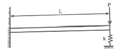
- PL3k/(2EI+kL3)
- PL3k/(3EI+kL3)
- PL3k/(6EI+kL3)
- PL3k/(8EI+kL3)
(정답률: 48%)
43. 전단과 휨만을 받는 철근콘크리트 보에서 콘크리트만으로 지지할 수 있는 전단강도 Vc는? (단, 보통중량콘크리트 사용, fck=28MPa, bω=100mm, d=300mm)
- 26.5kN
- 53.0kN
- 79.3kN
- 158.7kN
(정답률: 45%)
44. 보의 유효깊이 d=550mm, 보의 폭 bω=300mm인 보에서 스터럽이 부담할 전단력 VS=200kN일 경우, 적용 가능한 수직 스터럽의 간격으로 옳은 것은? (단, Av=142mm2, fyt=400MPa, fck=24MPa)
- 150mm
- 180mm
- 200mm
- 250mm
(정답률: 45%)
45. 고력볼트 F10T-M24의 현장시공을 위한 본조임의 조임력(T)은 얼마인가? (단, 토크계수는 0.13, F10T-M24볼트의 설계볼트장력은 200kN이며 표준볼트장력은 설계볼트장력에 10%를 할증한다.)
- 568,573Nㆍmm
- 686,400Nㆍmm
- 799,656Nㆍmm
- 892,638Nㆍmm
(정답률: 49%)
46. 강구조 고장력볼트 마찰접합의 특징에 관한 설명으로 옳지 않은 것은?
- 시공이 용이하여 공기가 절약된다.
- 접합부의 강성과 강도가 크다.
- 품질관리가 용이하다.
- 국부적인 응력집중이 발생한다.
(정답률: 62%)
47. 그림과 같은 단면의 단순보에서 보의 중앙점 C단면에 생기는 휨응력 σb와 전단응력 v의 값은?
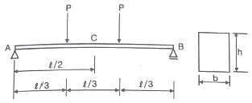
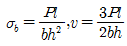
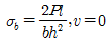
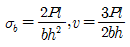
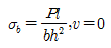
(정답률: 53%)
48. 다음과 같은 조건에서의 필릿용접의 최소 치수(mm)는 얼마인가? (단, 하중저항계수설계법 기준)
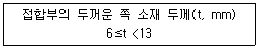
- 5mm
- 6mm
- 7mm
- 8mm
(정답률: 60%)
49. 그림과 같은 보에서 C점의 처짐은? (단, EI는 전 경간에 걸쳐 일정하다.)
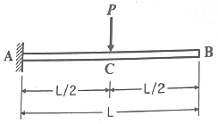
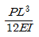
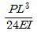
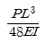
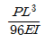
(정답률: 54%)
50. 다음 그림과 같이 단면적이 같은 4개의 단면을 보부재로 각각 사용할 경우 X축에 대한 처짐에 가장 유리한 단면은?
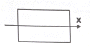
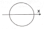
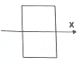
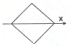
(정답률: 63%)
51. 그림과 같은 단면을 가진 압축재에서 유효좌굴길이 KL=250mm일 때 Euler의 좌굴하중 값은? (단, E=210,000MPa이다.)
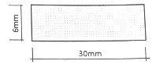
- 17.9kN
- 43.0kN
- 52.9kN
- 64.7kN
(정답률: 51%)
52. 철골구조와 비교한 철근콘크리트구조의 특징으로 옳지 않은 것은?
- 진동이 적고 소음이 덜 난다.
- 시공 시 동절기 기후의 영향을 받을 수 있다.
- 내화성이 크다.
- 구조의 개조나 보강이 쉽다.
(정답률: 66%)
53. 주철근으로 사용된 D22 철근 180°표준갈고리의 구부림 최소 내면 반지름으로 옳은 것은?
- db
- 2db
- 2.5db
- 3db
(정답률: 54%)
54. 그림과 같은 구조물의 부정정 차수는?
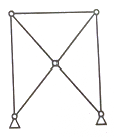
- 1차
- 2차
- 3차
- 4차
(정답률: 59%)
55. 각 지반의 허용지내력의 크기가 큰 것부터 순서대로 올바르게 나열된 것은?
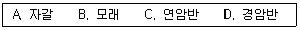
- B＞A＞C＞D
- A＞B＞C＞D
- D＞C＞A＞B
- D＞C＞B＞A
(정답률: 73%)
56. 그림과 같은 정정라멘에서 BD부재의 축방향력으로 옳은 것은? (단, +: 인장력, -: 압축력)
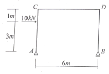
- 5kN
- -5kN
- 10kN
- -10kN
(정답률: 55%)
57. 강구조의 볼트접합 구성에 관한 일반적인 설명으로 옳지 않은 것은?
- 볼트의 중심사이의 간격을 게이지라인 이라고 한다.
- 볼트는 가공정밀도에 따라 상볼트, 중볼트, 흑볼트로 나뉜다.
- 게이지라인과 게이지라인과의 거리를 게이지라고 한다.
- 배치방식은 정렬배치와 엇모배치가 있다.
(정답률: 58%)
58. 압축철근 As’=2400mm2로 배근된 복철근보의 탄성처짐이 15mm라 할 때 지속하중에 의해 발생되는 5년 후 장기처짐은? (단, b=300mm, d=400mm, 5년 후 지속하중 재하에 따른 계수 ζ=2.0)
- 9mm
- 12mm
- 15mm
- 30mm
(정답률: 43%)
59. 연약지반에 대한 안전확보 대책으로 옳지 않은 것은?
- 지반개량공법을 실시한다.
- 말뚝기초를 적용한다.
- 독립기초를 적용한다.
- 건물을 경량화한다.
(정답률: 67%)
60. 다음 그림과 같이 수평하중 30kN이 작용하는 라멘구조에서 E점에서의 휨모멘트 값(절대값)은?
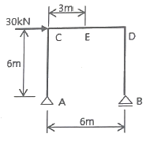
- 40kNㆍm
- 45kNㆍm
- 60kNㆍm
- 90kNㆍm
(정답률: 50%)
4과목: 건축설비
61. 유압식 엘리베이터에 관한 설명으로 옳지 않은 것은?
- 오버헤드가 작다.
- 기계실의 위치가 자유롭다.
- 큰 적재량으로 승강행정이 짧은 경우에는 적용할 수 없다.
- 지하주차장 엘리베이터와 같이 지하층에만 운전하는 경우 적용할 수 있다.
(정답률: 55%)
62. 온수난방에 관한 설명으로 옳지 않은 것은?
- 증기난방에 비해 예열시간이 길다.
- 온수의 잠열을 이용하여 난방하는 방식이다.
- 한랭지에서 운전정지 중에 동결의 우려가 있다.
- 증기난방에 비해 난방부하 변동에 따른 온도 조절이 비교적 용이하다.
(정답률: 63%)
63. 중앙식 급탕방식에 관한 설명으로 옳지 않은 것은?
- 온수를 사용하는 개소마다 가열장치가 설치된다.
- 상향 또는 하향 순환식 배관에 의해 필요개소에 온수를 공급한다.
- 국소식에 비해 기기가 집중되어 있으므로 설비의 유지관리가 용이하다.
- 호텔이나 병원 등과 같이 급탕개소가 많고 사용량이 많은 건물 등에 채용된다.
(정답률: 68%)
64. 건구온도 30℃, 상대습도 60%인 공기를 냉수코일에 통과시켰을 때 공기의 상태변화로 옳은 것은? (단, 코일 입구수온 5℃, 코일 출구수온 10℃)
- 건구온도는 낮아지고 절대습도는 높아진다.
- 건구온도는 높아지고 절대습도는 낮아진다.
- 건구온도는 높아지고 상대습도는 높아진다.
- 건구온도는 낮아지고 상대습도는 높아진다.
(정답률: 67%)
65. 터보식 냉동기에 관한 설명으로 옳지 않은 것은?
- 임펠러의 원심력에 의해 냉매가스를 압축한다.
- 대용량에서는 압축효율이 좋고 비례 제어가 가능하다.
- 대ㆍ중형 규모의 중앙식 공조에서 냉방용으로 사용된다.
- 기계적 에너지가 아닌 열에너지에 의해 냉동 효과를 얻는다.
(정답률: 71%)
66. 연결송수관설비의 방수구에 관한 설명으로 옳지 않은 것은?
- 방수구의 위치표시는 표시등 또는 축광식 표지로 한다.
- 호스접결구는 바닥으로부터 0.5m 이상 1m 이하의 위치에 설치한다.
- 개폐기능을 가진 것으로 설치하여야 하며, 평상 시 닫힌 상태를 유지하도록 한다.
- 연결송수관설비의 전용방수구 또는 옥내 소화전방수구로서 구경 50mm의 것으로 설치한다.
(정답률: 63%)
67. 엔탈피 변화량에 대한 현열 변화량의 비를 의미하는 것은?
- 현열비
- 잠열비
- 유인비
- 열수분비
(정답률: 72%)
68. 의복의 단열성을 나타내는 단위로서, 그 값이 클수록 인체에서 발생되는 열이 주위 공기로 적게 발산되는 것을 의미하는 것은?
- clo
- dB
- NC
- MRT
(정답률: 75%)
69. 양수 펌프의 회전수를 원래보다 20% 증가시켰을 경우 양수량의 변화로 옳은 것은?
- 20% 증가
- 44% 증가
- 73% 증가
- 100% 증가
(정답률: 68%)
70. 다음과 같은 조건에서 사무실의 평균조도를 800[lx]로 설계하고자 할 경우, 광원의 필요 수량은?
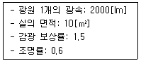
- 3개
- 5개
- 8개
- 10개
(정답률: 51%)
71. 공조부하 중 현열과 잠열이 동시에 발생하는 것은?
- 인체의 발생열량
- 벽체로부터의 취득열량
- 유리로부터의 취득열량
- 덕트로부터의 취득열량
(정답률: 64%)
72. 다음과 같이 정의되는 통기관의 종류는?
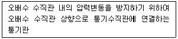
- 결합통기관
- 공용통기관
- 각개통기관
- 반송통기관
(정답률: 55%)
73. 공조방식 중 팬코일 유닛방식에 관한 설명으로 옳지 않은 것은?
- 유닛의 개별제어가 용이하다.
- 수배관이 없어 누수의 우려가 없다.
- 덕트 샤프트나 스페이스가 필요없다.
- 덕트방식에 비해 유닛의 위치변경이 용이하다.
(정답률: 61%)
74. 다음 설명에 알맞은 전기설비 관련 용어는?
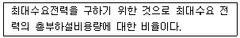
- 역률
- 부등률
- 부하율
- 수용률
(정답률: 54%)
75. 다음 중 급수 계통의 오염 원인과 가장 거리가 먼 것은?
- 급수로의 배수 역류
- 저수탱크에 유해물질 침입
- 수격작용(water hammering)
- 크로스 커넥션(cross connection)
(정답률: 63%)
76. 220[V], 200[W] 전열기를 110[V]에서 사용하였을 경우 소비전력은?
- 50[W]
- 100[W]
- 200[W]
- 400[W]
(정답률: 53%)
77. 덕트의 분기부에 설치하여 풍량조절용으로 사용되는 댐퍼는?
- 스플릿 댐퍼
- 평행익형 댐퍼
- 대향익형 댐퍼
- 버터플라이 댐퍼
(정답률: 64%)
78. 다음 중 변전실 면적에 영향을 주는 요소와 가장 거리가 먼 것은?
- 출입문의 높이
- 건축물의 구조적 여건
- 수전전압 및 수전방식
- 설치 기기와 큐비클의 종류 및 시방
(정답률: 67%)
79. 3상 동력과 단상 전등 부하를 동시에 사용할 수 있는 방식으로 대형빌딩이나 공장 등에서 사용되는 것은?
- 단상 3선식 220/110[V]
- 3상 2선식 220[V]
- 3상 3선식 220[V]
- 3상 4선식 380/220[V]
(정답률: 69%)
80. 개방형헤드를 사용하는 연결살수설비에 있어서 하나의 송수구역에 설치하는 살수헤드의 수는 최대 얼마 이하가 되도록 하여야 하는가?
- 10개
- 20개
- 30개
- 40개
(정답률: 57%)
5과목: 건축법규
81. 건축법령에 따른 리모델링이 쉬운 구조에 속하지 않는 것은?
- 구조체가 철골구조로 구성되어 잇을 것
- 구조체에서 건축설비, 내부 마감재료 및 외부 마감재료를 분리할 수 있을 것
- 개별 세대 안에서 구획된 실의 크기, 개수 또는 위치 등을 변경할 수 있을 것
- 각 세대는 인접한 세대와 수직 또는 수평 방향으로 통합하거나 분할할 수 있을 것
(정답률: 69%)
82. 국토교통부장관이 정한 범죄예방 기준에 따라 건축하여야 하는 대상 건축물에 속하지 않는 것은?
- 수련시설
- 교육연구시설 중 도서관
- 업무시설 중 오피스텔
- 숙박시설 중 다중생활시설
(정답률: 50%)
83. 지하식 또는 건축물식 노외주차장의 차로에 관한 기준 내용으로 옳지 않은 것은? (단, 이륜자동차전용 노외주차장이 아닌 경우)
- 높이는 주차바닥면으로부터 2.3m 이상으로 하여야 한다.
- 경사로의 종단경사도는 직선 부분에서는 17%를 초과하여서는 아니 된다.
- 곡선 부분은 자동차가 4m 이상의 내변반경으로 회전할 수 있도록 하여야 한다.
- 주차대수 규모가 50대 이상인 경우의 경사로는 너비 6m 이상인 2차로를 확보하거나 진입차로와 진출차로를 분리하여야 한다.
(정답률: 58%)
84. 피난용승강기의 설치에 관한 기준 내용으로 옳지 않은 것은?
- 예비전원으로 작동하는 조명설비를 설치할 것
- 승강장의 바닥면적은 승강기 1대당 5m2이상으로 할 것
- 각 층으로부터 피난층까지 이르는 승강로를 단일구조로 연결하여 설치할 것
- 승강장의 출입구 부근의 잘 보이는 곳에 해당 승강기가 피난용승강기임을 알리는 표지를 설치할 것
(정답률: 73%)
85. 대지의 조경에 있어 조경 등의 조치를 하지 아니할 수 있는 건축물 기준으로 옳지 않은 것은?
- 면적 5천 제곱미터 미만인 대지에 건축하는 공장
- 연면적의 합계가 1천500제곱미터 미만인 공장
- 연면적의 합계가 2천제곱미터 미만인 물류시설
- 녹지지역에 건축하는 건축물
(정답률: 42%)
86. 건축허가신청에 필요한 설계도서 중 건축계획서에 표시하여야 할 사항으로 옳지 않은 것은?
- 주차장규모
- 토지형질변경계획
- 건축물의 용도별 면적
- 지역ㆍ지구 및 도시계획사항
(정답률: 54%)
87. 국토의 계획 및 이용에 관한 법률상 용도지역에서의 용적률 최대 한도 기준이 옳지 않은 것은? (단, 도서지역의 경우)
- 주거지역: 500퍼센트 이하
- 녹지지역: 100퍼센트 이하
- 공업지역: 400퍼센트 이하
- 상업지역: 1000퍼센트 이하
(정답률: 61%)
88. 건축물이 있는 대지의 분할 제한 최소 기준이 옳은 것은? (단, 상업지역의 경우)
- 100 제곱미터
- 150 제곱미터
- 200 제곱미터
- 250 제곱미터
(정답률: 50%)
89. 허가권자가 가로구역별로 건축물의 높이를 지정ㆍ공고할 때 고려하지 않아도 되는 사항은?
- 도시ㆍ군관리계획의 토지이용계획
- 해당 가로구역에 접하는 대지의 너비
- 도시미관 및 경관계획
- 해당 가로구역의 상수도 수용능력
(정답률: 41%)
90. 다음 중 거실의 용도에 따른 조도기준이 가장 낮은 것은? (단, 바닥에서 85센티미터의 높이에 있는 수평면의 조도 기준)
- 독서
- 회의
- 판매
- 일반사무
(정답률: 65%)
91. 다음의 옥상광장 등의 설치에 관한 기준 내용 중 ( )안에 알맞은 것은?
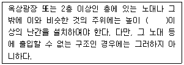
- 1.0m
- 1.2m
- 1.5m
- 1.8m
(정답률: 69%)
92. 국토의 계획 및 이용에 관한 법령상 제1종 일반주거지역 안에서 건축할 수 있는 건축물에 속하지 않는 것은?
- 아파트
- 단독주택
- 노유자시설
- 교육연구시설 중 고등학교
(정답률: 68%)
93. 노외주차장의 설치에 관한 계획기준 내용 중 ( )안에 알맞은 것은?
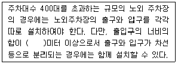
- 4.5
- 5.0
- 5.5
- 6.0
(정답률: 40%)
94. 건축법령상 공동주택에 해당하지 않는 것은?
- 기숙사
- 연립주택
- 다가구주택
- 다세대주택
(정답률: 63%)
95. 다음은 건축선에 따른 건축제한에 관한 기준 내용이다. ( )안에 알맞은 것은?
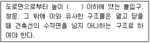
- 1.5m
- 2.5m
- 3.5m
- 4.5m
(정답률: 53%)
96. 다음 중 옥내계단의 너비의 최소 설치기준으로 적합하지 않는 것은?
- 관람장의 용도에 쓰이는 건축물의 계단의 너비 120센티미터 이상
- 중학교 용도에 쓰이는 건축물의 계단의 너비 150센티미터 이상
- 거실의 바닥면적의 합계가 100제곱미터 이상인 지하층의 계단의 너비 120센티미터 이상
- 바로 윗층의 거실의 바닥면적의 합계가 200제곱미터 이상인 층의 계단의 너비 150센티미터 이상
(정답률: 46%)
97. 국토의 계획 및 이용에 관한 법률상 주거지역의 세분에서 단독주택 중심의 양호한 주거환경을 보호하기 위하여 필요한 지역에 대해 지정하는 용도지역은?
- 제1종 전용주거지역
- 제1종 특별주거지역
- 제1종 일반주거지역
- 제3종 일반주거지역
(정답률: 69%)
98. 건축물의 출입구에 설치하는 회전문의 구조에 대한 설명으로 옳지 않은 것은?
- 계단이나 에스컬레이터로부터 2미터 이상의 거리를 둘 것
- 틈 사이를 고무와 고무펠트의 조합체 등을 사용하여 신체나 물건 등에 손상이 없도록 할 것
- 출입에 지장이 없도록 일정한 방향으로 회전하는 구조로 할 것
- 회전문의 회전속도는 분당회전수가 10회를 넘지 아니하도록 할 것
(정답률: 73%)
99. 높이 31m를 넘는 각 층의 바닥면적 중 최대 바닥면적이 5000m2인 건축물에 원칙적으로 설치하여야 하는 비상용 승강기의 최소 대수는?
- 1대
- 2대
- 3대
- 4대
(정답률: 53%)
100. 국토의 계획 및 이용에 관한 법률상 용도지역의 구분이 모두 옳은 것은?
- 도시지역, 관리지역, 농림지역, 자연환경보전지역
- 도시지역, 개발관리지역, 농림지역, 보전지역
- 도시지역, 관리지역, 생산지역, 녹지지역
- 도시지역, 개발제한지역, 생산지역, 보전지역
(정답률: 46%)